class: center, middle # Machine learning models Pierre Ablin .affiliations[  ] --- # Classification Dataset: Iris Three species of iris: -- .center[ 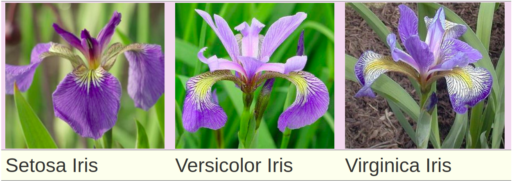 <br/> ] -- For each plant, we have 4 "features": Sepal length, Sepal width, Petal length, Petal width -- ### Goal: given features, predict the species --- # Classification Dataset: Iris ### Goal: given features, predict the species -- Example: - Sepal length = 5.1 cm - Sepal width = 3.5 cm - Petal length = 1.4 cm - Petal width = 0.2 cm -- ### Algorithm : "The species is Setosa" -- We want to build a function $f$ such that $f($Sepal length, sepal width, petal length, petal width$)= s$ where $s$ is the correct species. --- # Classification Dataset: Iris We want to build a function $f$ such that $f($Sepal length, sepal width, petal length, petal width$)= s$ where $s$ is the correct species. ## Today: how can we build such function? --- # Looking at the dataset Consider just two features: petal length (l) and petal width (w). We have $150$ samples: -- - Sample 1: species = Setosa, l = 1.5, w = 0.2 -- - Sample 2: species = Versicolor, l = 4.2, w = 1.5 -- - ... --- # Looking at the dataset Since we have only two features, each sample can be represented as a point in a two dimensional plane: -- .center[ 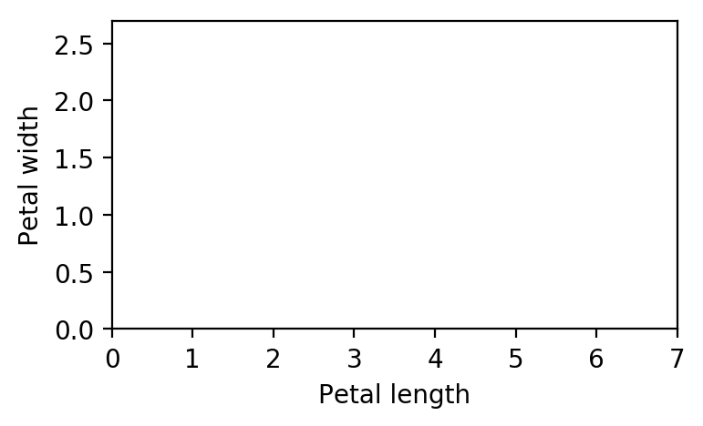 <br/> ] --- # Looking at the dataset Since we have only two features, each sample can be represented as a point in a two dimensional plane: .center[ 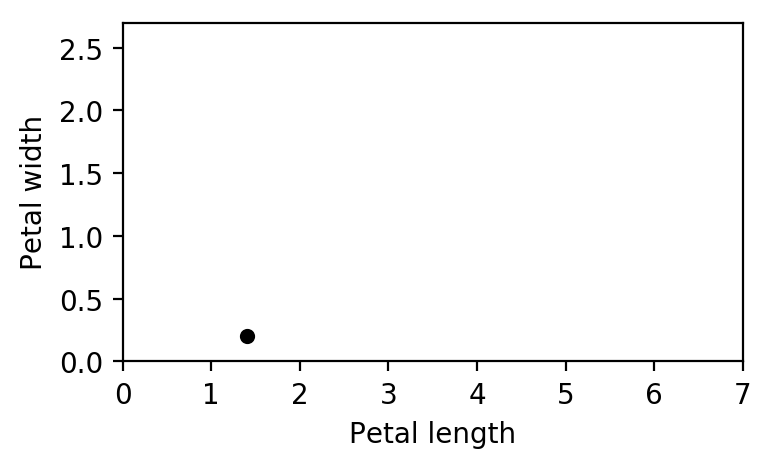 <br/> ] --- # Looking at the dataset Since we have only two features, each sample can be represented as a point in a two dimensional plane: .center[ 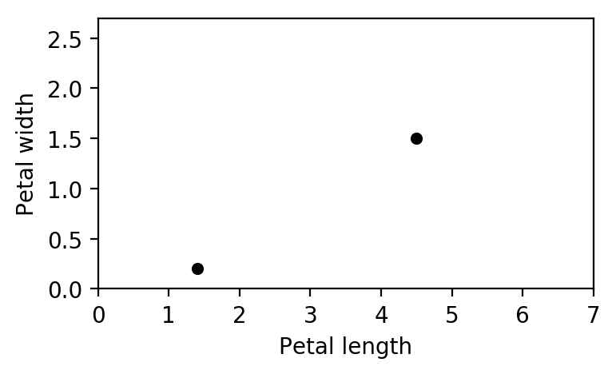 <br/> ] --- # Looking at the dataset Since we have only two features, each sample can be represented as a point in a two dimensional plane: .center[ 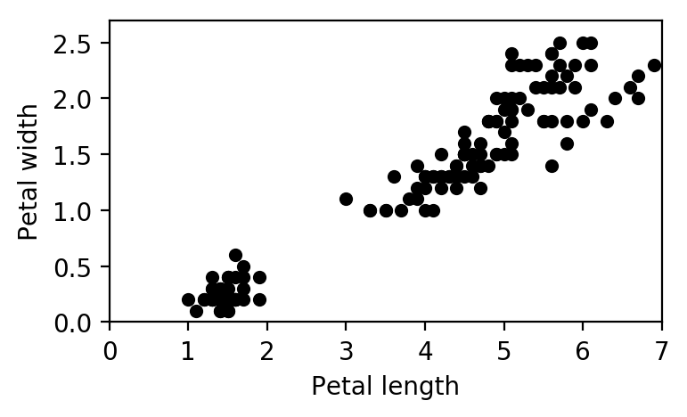 <br/> ] --- # Looking at the dataset Since we have only two features, each sample can be represented as a point in a two dimensional plane: .center[ 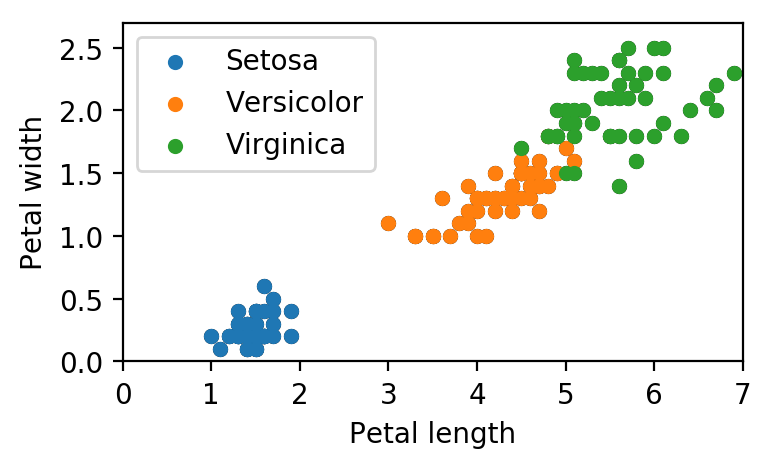 <br/> ] --- # A **classification** machine learning model... ... will take as input a **new** pair (petal length, petal width) and tell which species it belongs to. -- .center[ <br/> ] --- # A **classification** machine learning model... ... will take as input a **new** pair (petal length, petal width) and tell which species it belongs to. .center[ <br/> ] --- # A **classification** machine learning model... ... will take as input a **new** pair (petal length, petal width) and tell which species it belongs to. .center[ 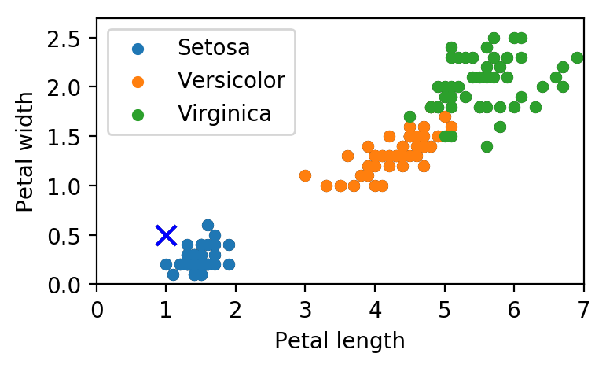 <br/> ] --- # A **classification** machine learning model... ... will take as input a **new** pair (petal length, petal width) and tell which species it belongs to. .center[ 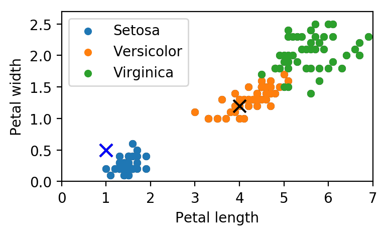 <br/> ] --- # A **classification** machine learning model... ... will take as input a **new** pair (petal length, petal width) and tell which species it belongs to. .center[ <br/> ] --- # A **classification** machine learning model... ... will take as input a **new** pair (petal length, petal width) and tell which species it belongs to. .center[ <br/> ] --- # A **classification** machine learning model... ... will take as input a **new** pair (petal length, petal width) and tell which species it belongs to. .center[ 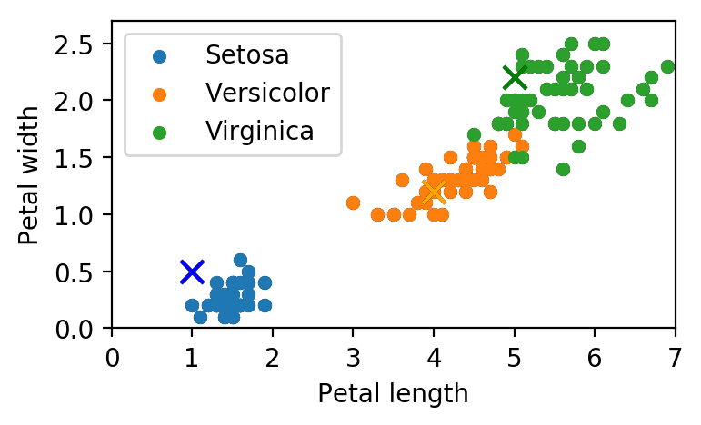 <br/> ] --- # A **classification** machine learning model... ... will take as input a **new** pair (petal length, petal width) and tell which species it belongs to. .center[ 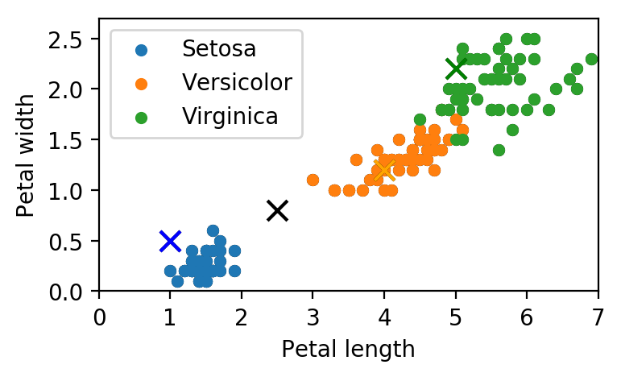 <br/> ] --- # A **classification** machine learning model... ... will take as input a **new** pair (petal length, petal width) and tell which species it belongs to. .center[ 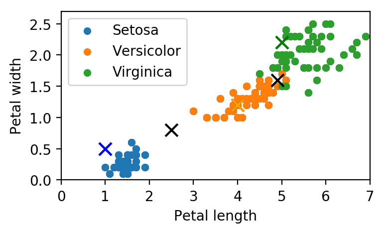 <br/> ] --- # A **classification** machine learning model... ... will take as input a **new** pair (petal length, petal width) and tell which species it belongs to. .center[ <img src="images/iris_14.png" style="width: 600px;" /> <br/> ] --- # A **classification** machine learning model... ... Assigns to each point in space a predicted class. It splits space into decision regions. .center[ <img src="images/iris_14.png" style="width: 600px;" /> <br/> ] --- # A **classification** machine learning model... ... Assigns to each point in space a predicted class. It splits space into decision regions. .center[ 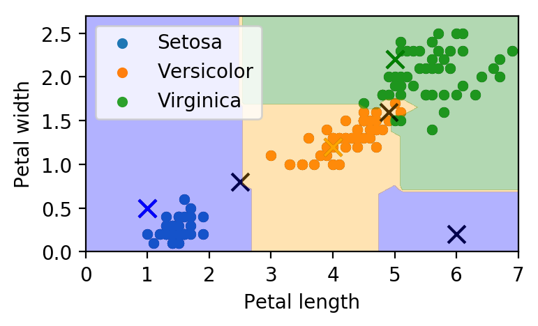 <br/> ] --- # Today: Usual ways to build these regions. .center[ <br/> ] --- # Regression dataset: Boston housing Goal: predict the median price of houses in suburbs of Boston given some characteristics (13 features) -- - Per capita crime rate - Average number of rooms - Population employment - Level of nitric oxide concentration in the air - ... -- A model takes all these inputs and predicts the median price: **regression** --- # Illustration in 1-D To visualize the data, we can plot the target (price) against one feature (e.g. crime rate): .center[ 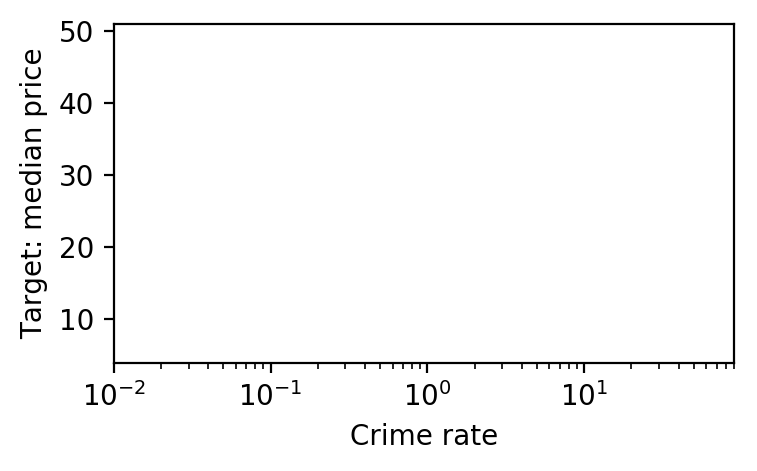 <br/> ] --- # Illustration in 1-D To visualize the data, we can plot the target (price) against one feature (e.g. crime rate): .center[ 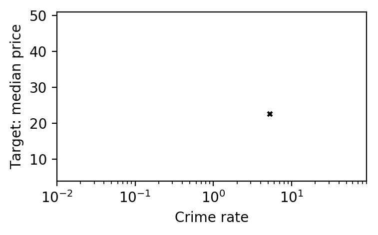 <br/> ] --- # Illustration in 1-D To visualize the data, we can plot the target (price) against one feature (e.g. crime rate): .center[ 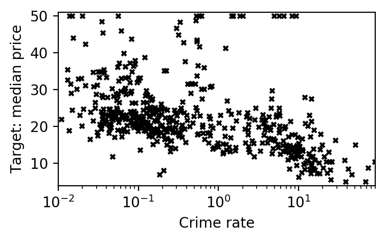 <br/> ] -- There is a clear trend, but perfect prediction of the target is impossible --- # Illustration in 1-D A machine learning model would try to predict the target from the feature: .center[ 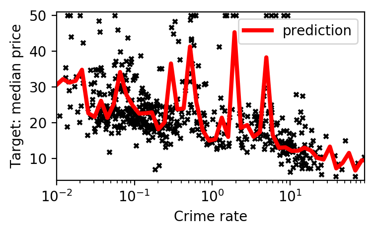 <br/> ] --- # Illustration in 2-D Using two features, we can visualize each sample as a point in 2-D, and associate the **target** to a **color** .center[ 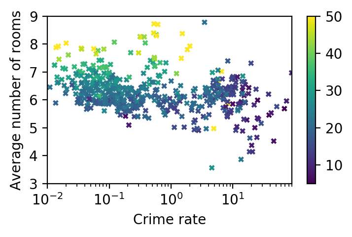 <br/> ] --- # Illustration in 2-D A machine learning model associates each point with a predicted value .center[ 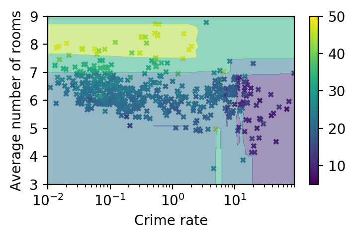 <br/> ] --- # Today: Usual ways to build these regions. .center[ <br/> ] --- # Decision trees Let's go back to the Iris dataset .center[ <br/> ] --- # Decision trees If I give you a new point where "petal length" $=1.5$, you are fairly confident that the species is "Setosa" .center[ <br/> ] --- # Decision trees If I give you a new point where "petal length" $<2.5$, you are fairly confident that the species is "Setosa" .center[ <img src="images/decision_trees.png" style="width: 600px;" /> <br/> ] --- # Decision trees If I give you a new point where "petal length" $<2.5$, you are fairly confident that the species is "Setosa" .center[ 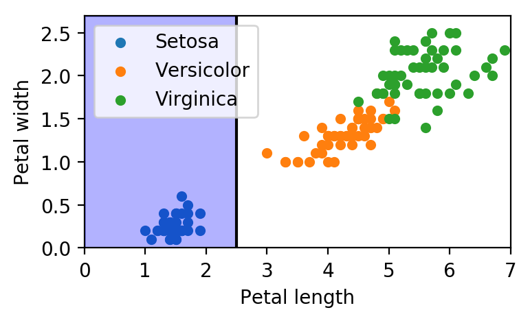 <br/> ] --- # Decision trees Then if I give you a new point with "petal width" $>1.6$, you are fairly confident that the species is "Virginica" .center[ 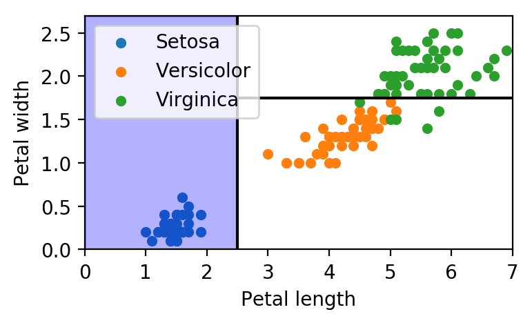 <br/> ] --- # Decision trees Then if I give you a new point with "petal width" $>1.6$, you are fairly confident that the species is "Virginica" .center[ 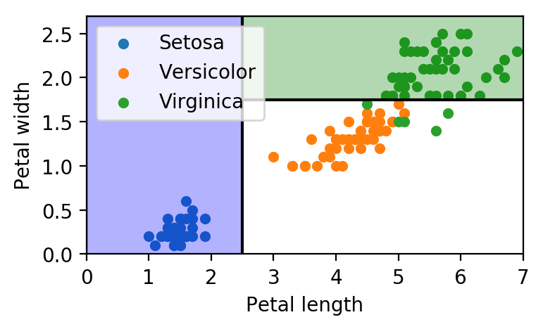 <br/> ] --- # Decision trees Then if I give you a new point with "petal length" $<5$, you are fairly confident that the species is "Versicolor" .center[ <br/> ] --- # Decision trees Then if I give you a new point with "petal length" $<5$, you are fairly confident that the species is "Versicolor" .center[ 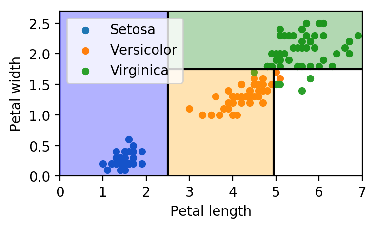 <br/> ] --- # Decision trees The other points can be classified as "Virginica": we have built a set of rules to classify all points ! .center[ 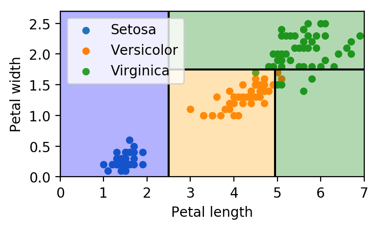 <br/> ] --- # Why is it called trees? .center[ <img src="tree.svg" style="width: 600px;" /> <br/> ] --- # Advantages of trees Fast inference: - Sequentially follow a set of simple rules -- Interpretability - It is easy to understand why the model made a prediction --- # Problem with single trees Fitting complicated datasets might require **very** deep trees .center[ 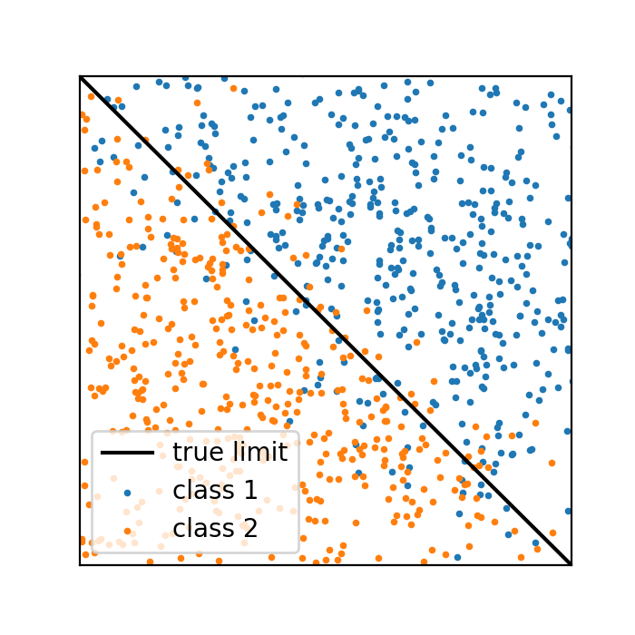 <br/> ] --- # Problem with single trees Fitting complicated datasets might require **very** deep trees: depth = 1 .center[ 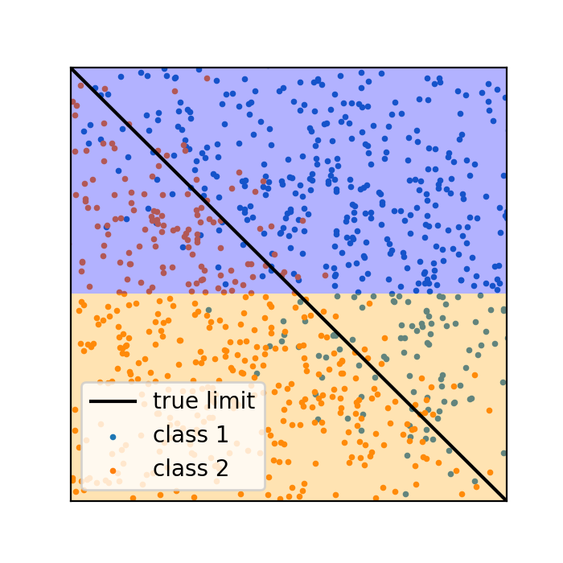 <br/> ] --- # Problem with single trees Fitting complicated datasets might require **very** deep trees: depth = 2 .center[ 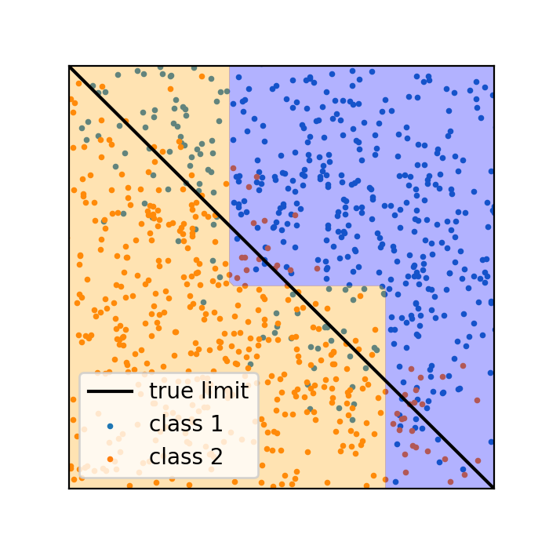 <br/> ] --- # Problem with single trees Fitting complicated datasets might require **very** deep trees: depth = 3 .center[ 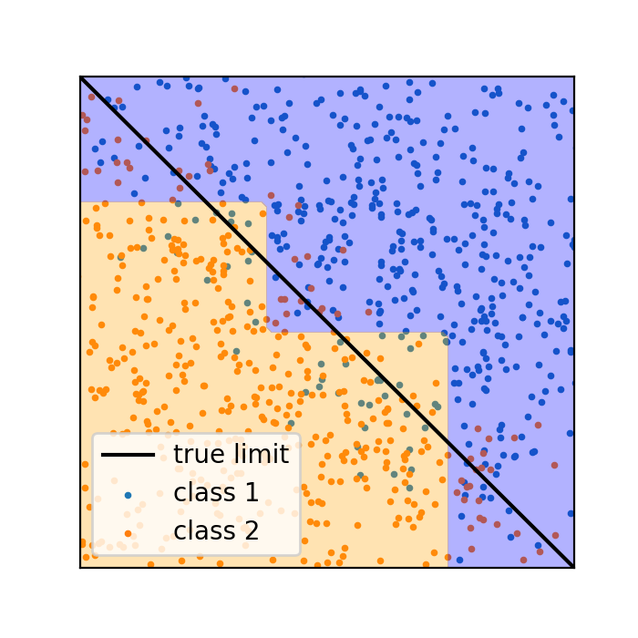 <br/> ] --- # Problem with single trees Fitting complicated datasets might require **very** deep trees: depth = 4 .center[ 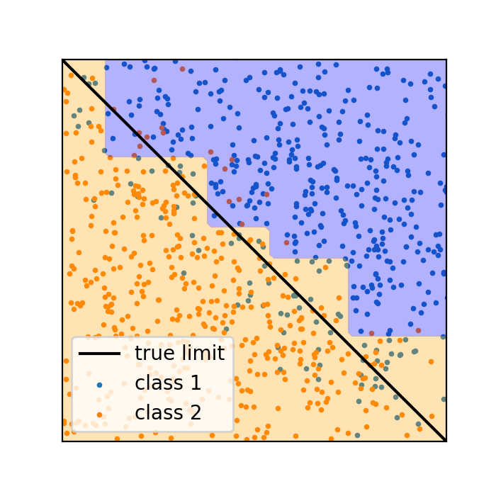 <br/> ] --- # Problem with single trees Fitting complicated datasets might require **very** deep trees: depth = 5 .center[ 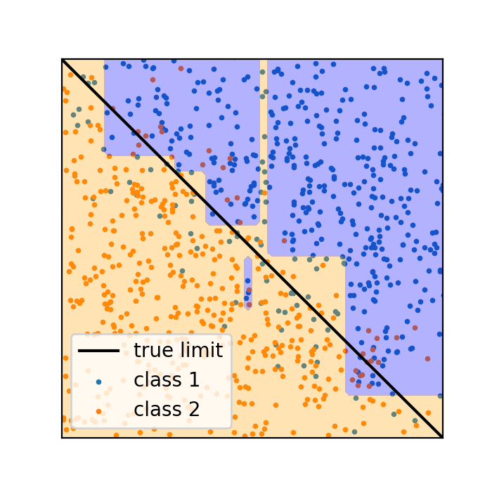 <br/> ] --- # Problem with single trees Fitting complicated datasets might require **very** deep trees: depth = 6 .center[ 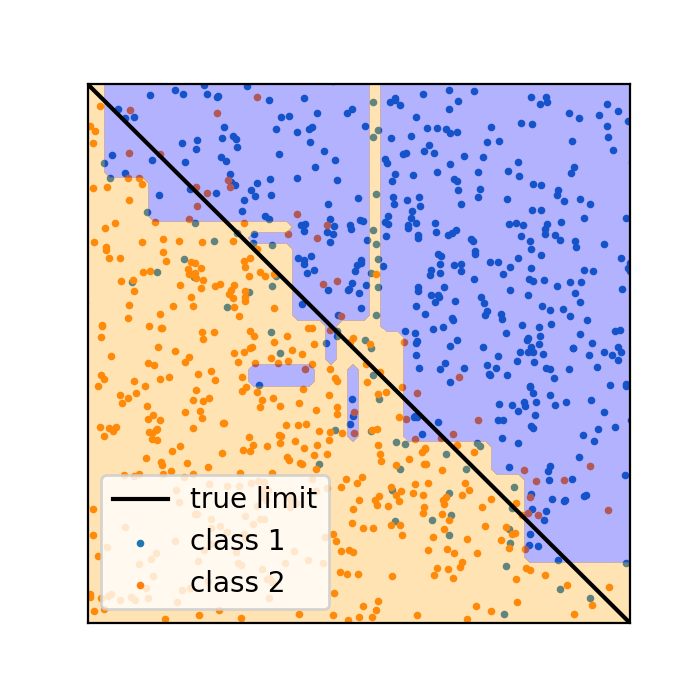 <br/> ] --- # Problem with single trees Fitting complicated datasets might require **very** deep trees: depth = 7 .center[ 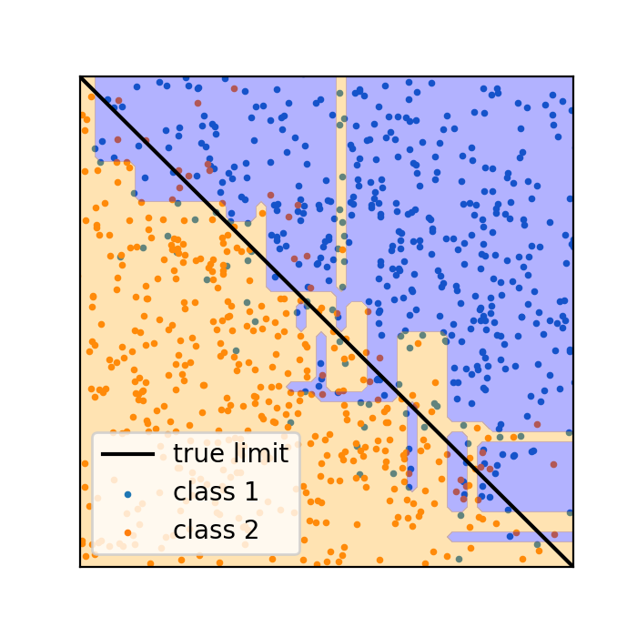 <br/> ] --- # Problem with single trees Fitting complicated datasets might require **very** deep trees: depth = 8 .center[ 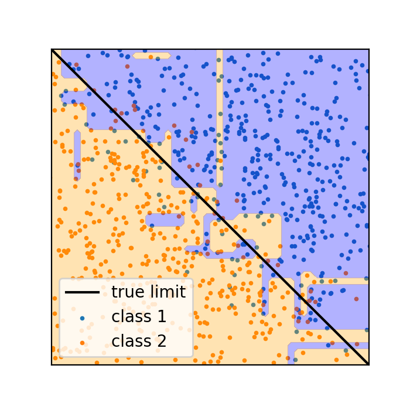 <br/> ] --- # Problem with single trees Fitting complicated datasets might require **very** deep trees: depth = 9 .center[ 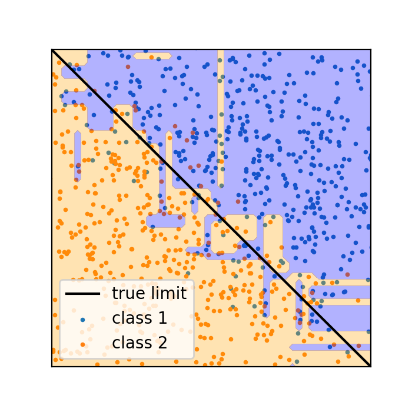 <br/> ] --- # Problem with single trees Fitting complicated datasets might require **very** deep trees: depth = 10 **overfit** .center[ 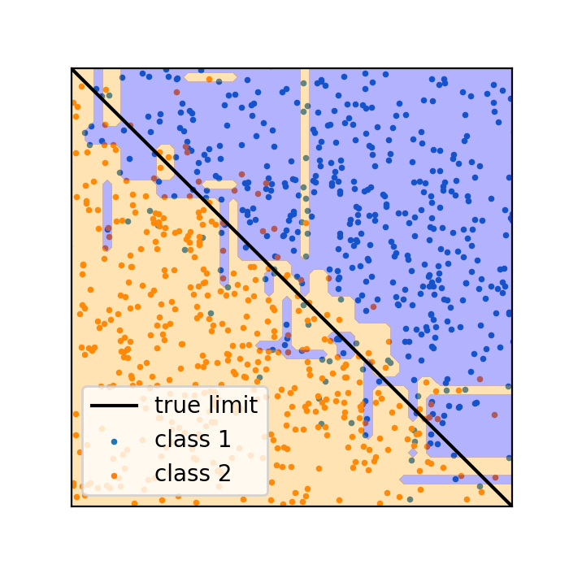 <br/> ] --- # Solution: grow a forest ! Idea: - Instead of 1, grow multiple trees on random subsets of the data - To make prediction, each tree makes a prediction, and choose the most common answer (i.e. vote) -- .center[ 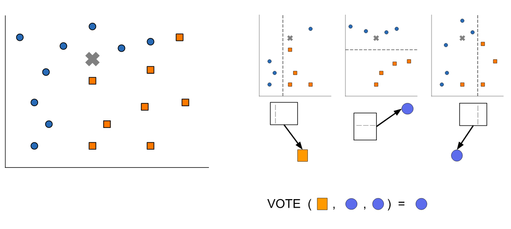 <br/> ] --- # Random Forest: Using 100 trees depth = 1 .center[ 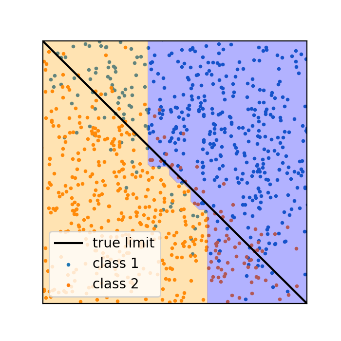 <br/> ] --- # Random Forest: Using 100 trees depth = 2 .center[ 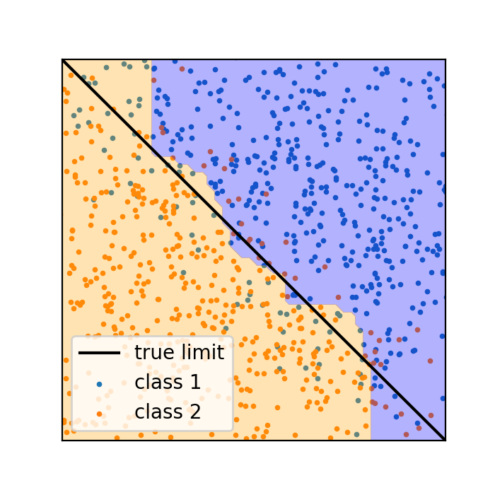 <br/> ] --- # Random Forest: Using 100 trees depth = 3 .center[ <br/> ] --- # Random Forest: Using 100 trees depth = 4 .center[ 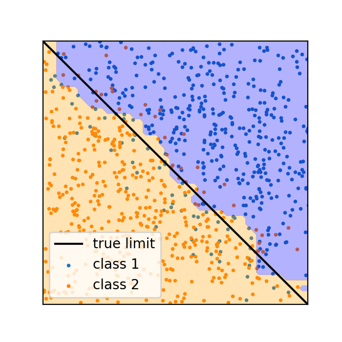 <br/> ] --- # Random Forest: Using 100 trees depth = 5 .center[ <br/> ] --- # Random Forest: Using 100 trees depth = 6 .center[ 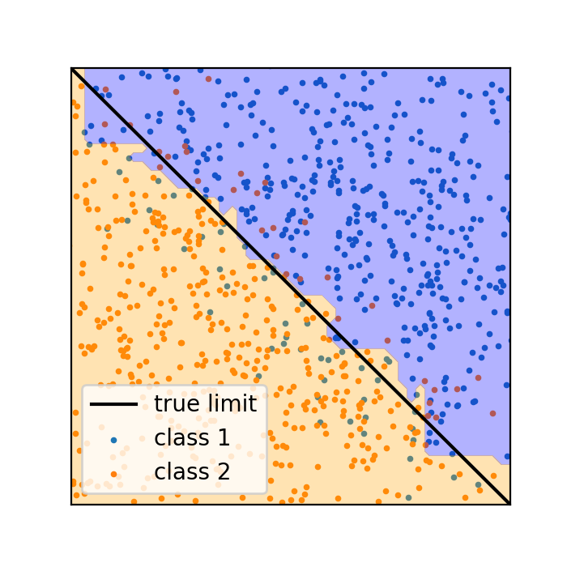 <br/> ] --- # Random Forest: Using 100 trees depth = 7 .center[ <br/> ] --- # Random Forest: Using 100 trees depth = 8 .center[ <br/> ] --- # Random Forest: Using 100 trees depth = 9 .center[ <br/> ] --- # Random Forest: Using 100 trees depth = 10 .center[ <br/> ] --- # Linear models Linear models for **classification** with two classes Features: $x = (x_1, \dots, x_p)$ -- Model coefficients: $(w_1, \dots, w_p)$ and bias $b$ -- Prediction - $x$ is from class 1 if $w_1 \times x_1 + \cdots + w_p \times x_p + b > 0$ - $x$ is from class 2 if $w_1 \times x_1 + \cdots + w_p \times x_p + b < 0$ --- # Linear models Linear models for **regression** Features: $x = (x_1, \dots, x_p)$ -- Model coefficients: $(w_1, \dots, w_p)$ and bias $b$ -- Prediction - $y\simeq w_1 \times x_1 + \cdots + w_p \times x_p + b$ --- # Linear models Corresponds to drawing a line / plane between points .center[ 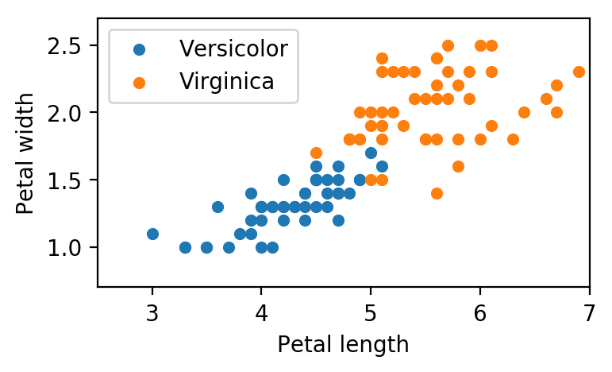 <br/> ] --- # Linear models Corresponds to drawing a line / plane between points .center[ 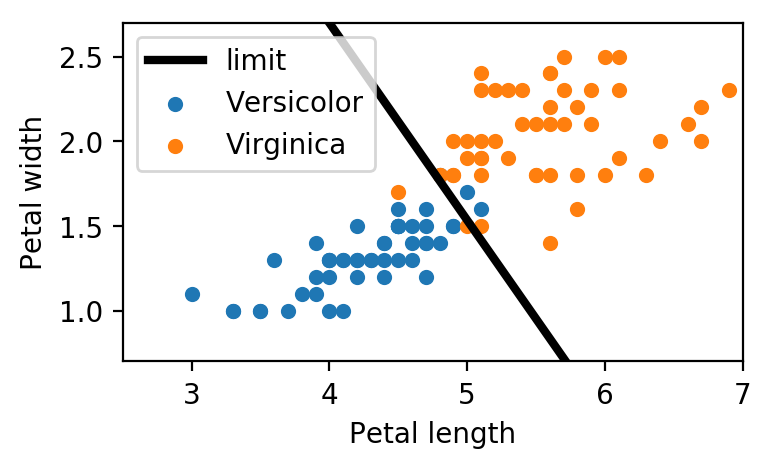 <br/> ] --- # Linear models Corresponds to drawing a line / plane between points .center[ 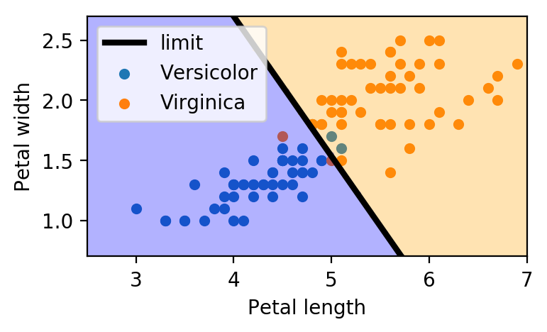 <br/> ] -- - Versicolor if $2.8 \times$ length $+2.4 \times$ width $-17.6 < 0$ - Virginica otherwise --- # Linear models: use case Linear models are extremely simple. Cannot separate such dataset: .center[ 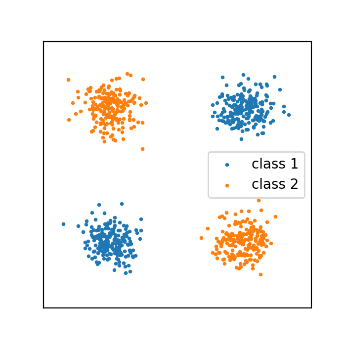 <br/> ] Widely used when the number of samples is **not** much larger than number of features --- # Linear models and overfit Despite their simplicity, linear models **can** overfit, especially when there are not enough samples. -- In general, if the number of samples $n$ is $\leq$ number of features $p$, you can always find linear coefficients such that the prediction is perfect on each sample -- ** Even if the dataset is pure noise** -- In 2-d, if you only have $2$ points, you can always separate them with a line. --- # Linear models and overfit ## Example: Target $y$: number of covid cases in France in the last 3 days $y = (7379, 5353, 5413)$ -- 3 features: - Temperature in Paris in the last 3 days: $x_1 = (19, 21, 19)$ -- - Height of the tide in Brest: $x_2 = (5.62, 5.90, 6.26)$ -- - Number of students in this class $x_3 = (0, 0, 62)$ -- You can check that: $$ y = 11349.1 \times x_1 -9995.8 \times x_2 + 87.3 \times x_3 $$ --- # Neural networks --- # Neural networks Neural networks are a powerful way to go beyond linear models. -- - Sequence of layers - One layer maps $p$ inputs to $q$ outputs -- Input $x_1, \cdots, x_p$ Output $z_1, \cdots, z_q$ -- **Parameters** - Weights $w^i$, $i=1\dots q$ - Biases $b$ - Non linearity $\sigma$ -- $z_i = \sigma(w^i_1\times x_1 + \dots + w^i_p \times x_p + b)$ --- # Neural networks $z_i = \sigma(w^i_1\times x_1 + \dots + w^i_p \times x_p + b)$ -- Layers are stacked: .center[ <img src="images/Colored_neural_network.svg" style="width: 350px;" /> <br/> ] --- # Neural networks $z_i = \sigma(w^i_1\times x_1 + \dots + w^i_p \times x_p + b)$ -- Layers are stacked: .center[ <img src="images/Colored_neural_network.svg" style="width: 270px;" /> <br/> ] Here, 3 layers: depth=3 --- # Universal approximators **Theorem:** a neural network with one hidden layer is a universal approximator. With enough hidden units, it can approximate any transform. -- **Striking** difference with linear model .center[ <br/> ] --- # Role of depth If 1-layers Neural networks can learn any function, why do you need more layers? -- - Can learn more complicated functions with fewer hidden units -- .center[ 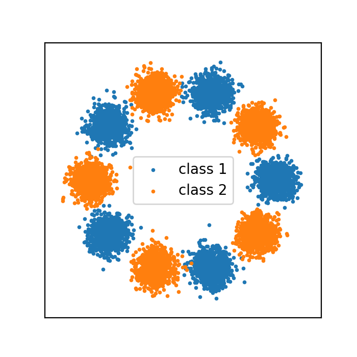 <br/> ] --- # Role of depth If 1-layers Neural networks can learn any function, why do you need more layers? 1 layer 2 hidden units .center[ 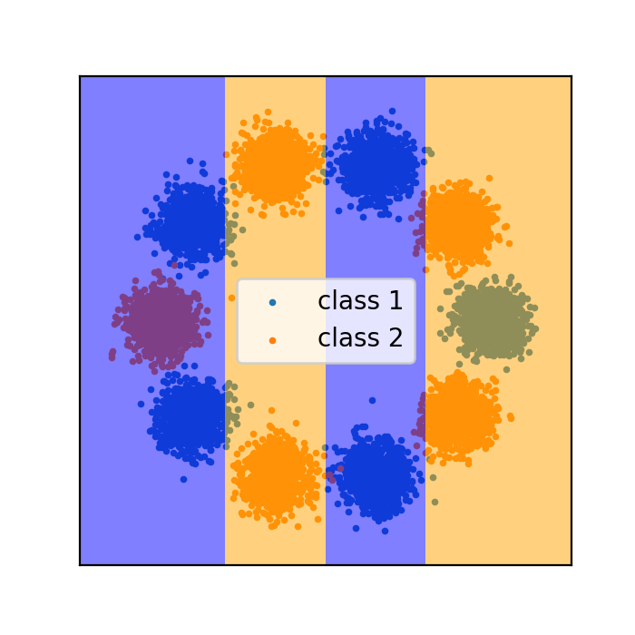 <br/> ] --- # Role of depth If 1-layers Neural networks can learn any function, why do you need more layers? 1 layer 3 hidden units .center[ <img src="images/nn_one_3.png" style="width: 350px;" /> <br/> ] --- # Role of depth If 1-layers Neural networks can learn any function, why do you need more layers? 1 layer 4 hidden units .center[ 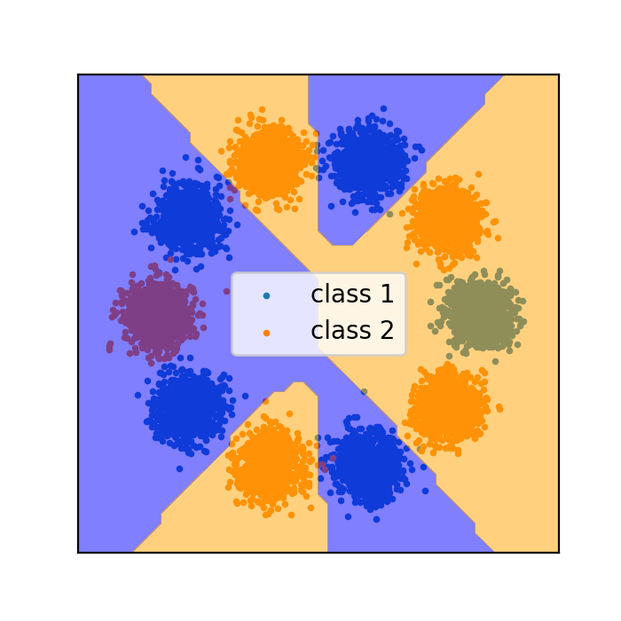 <br/> ] --- # Role of depth If 1-layers Neural networks can learn any function, why do you need more layers? 1 layer 5 hidden units .center[ <br/> ] --- # Role of depth If 1-layers Neural networks can learn any function, why do you need more layers? 1 layer 6 hidden units .center[ 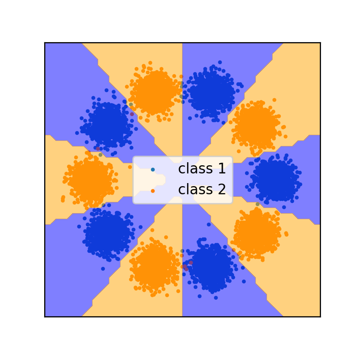 <br/> ] --- # Role of depth If 1-layers Neural networks can learn any function, why do you need more layers? 2 layers 2 hidden units .center[ 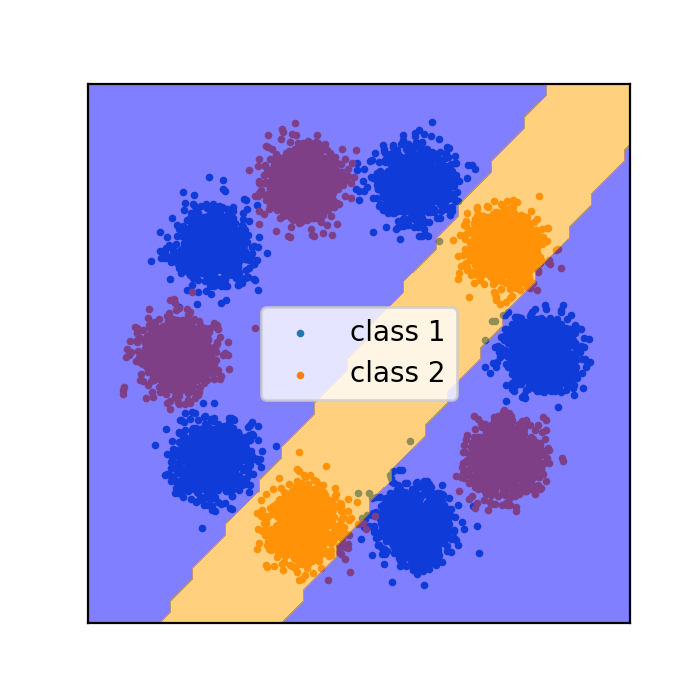 <br/> ] --- # Role of depth If 1-layers Neural networks can learn any function, why do you need more layers? 2 layers 3 hidden units .center[ 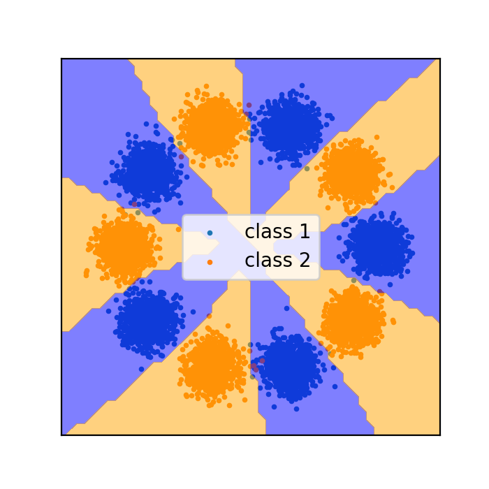 <br/> ] --- # Role of depth If 1-layers Neural networks can learn any function, why do you need more layers? 2 layers 4 hidden units .center[ 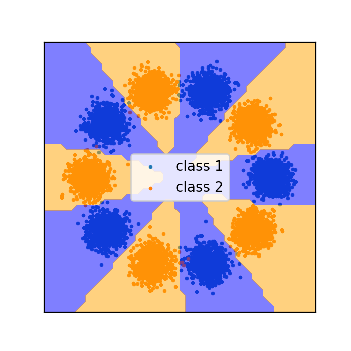 <br/> ] --- # Neural nets and overfit - Neural nets have lots of parameters, so you need many samples to train them, otherwise they overfit - Mystery : some very big neural networks (i.e. for image recognition) have many more parameters than training samples, yet they do not overfit --- # Next: - How do you easily use all these models in Python?